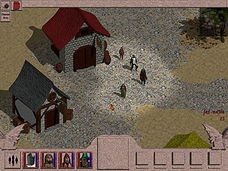
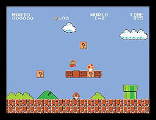

Quels sont les différents types de jeux vidéo ?
Les jeux vidéo, il en existe des centaines de milliers et pourtant aucun ne se ressemble vraiment. Il serait impossible de tous les ranger dans la même case n’est-ce pas ? Et pour cause, comme pour les films ou les livres, on trouve toutes sortes de genres de jeux vidéo. MMORPG, FPS, RPG… Nous vous proposons aujourd’hui de revenir sur les genres les plus emblématiques qui composent l’univers vidéoludique en vous présentant les différents genres de jeux vidéo.
-
Action
Le jeu d'action est un genre de jeu vidéo dont le gameplay est fondé sur des interactions en temps réel et qui fait essentiellement appel à l'habileté et aux réflexes du joueur.
Le terme tend en particulier à désigner les jeux mettant en œuvre des confrontations violentes, comme les shoot them up, les jeux de combat ou les jeux de tir à la première personne (FPS), mais son champ s'étend en fait à des types de jeux très variés, comme les casse-briques, les jeux de labyrinthe, les jeux de plates-formes, les jeux de course, les jeux de sport, etc., et dont beaucoup ne sont pas sous-catégorisés. Le jeu d'action est de loin le genre de jeu vidéo le plus représenté. -
RPG
Les jeux vidéo de rôle (ou RPG) s'inspirent des jeux de rôle sur table tel que Donjons & Dragons. La majorité d'entre eux invite le joueur à incarner un ou plusieurs « aventuriers » qui se spécialisent dans un domaine spécifique (combat, magie, etc.) et à les faire progresser à l'intérieur d'une intrigue linéaire. Cependant, des jeux tels que ceux de la série The Elder Scrolls offrent une liberté quasi totale. L'environnement varie beaucoup d'un jeu à l'autre, mais un des thèmes les plus fréquents est le médiéval fantastique. À mesure que progresse l'histoire, les personnages développent leurs compétences grâce à l'expérience acquise au cours des combats (une caractéristique essentielle des jeux de rôle). Le joueur peut équiper les personnages avec des armes, armures, casques, etc., trouvés ou achetés dans des échoppes.
-
Platformeur
 Ce type de jeu propose au joueur d’évoluer dans un monde avec des pièges et des embûches qu’il faut traverser en effectuant certaines actions : sauter, grimper esquiver, etc. Par exemple, le premier Donkey Kong né en 1981 est un jeu de plateforme, au même titre que Mario ou Sonic.
Conclution
Les jeux vidéo ont évolué au fil des années pour offrir une immense diversité d’expériences aux joueurs.
Des FPS dynamiques aux RPG immersifs, en passant par les jeux de stratégie et d’aventure, chaque genre a
ses propres particularités et son public passionné.
Ce site a permis d’explorer les différents types de jeux vidéo et de
mieux comprendre leurs mécaniques et leur histoire. Quel que soit le genre qui te correspond le mieux, l’essentiel est de
s’amuser et de découvrir de nouveaux horizons vidéoludiques !
Merci de ta visite et n’hésite pas à explorer davantage le
monde du jeu vidéo !